Chapter 2 · Part 1 — Bones
Jack, Annie, and Peanut looked outside.
Snow was falling from a gray sky.
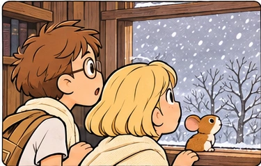
The tree house was in the tallest tree in a grove of tall, bare trees.
The grove was on a wide, white plain. Beyond the plain were high, rocky cliffs.
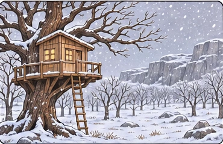
“I’m c-cold,” said Annie. Her teeth . She wrapped her towel tightly around her.
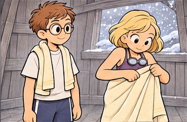
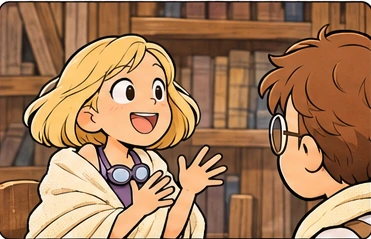
Sq-squeak. Peanut sounded cold, too.
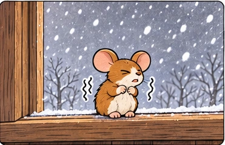
“Poor mouse,” said Annie. “I’ll put you into Jack’s pack. You’ll be warmer there.”
Annie slipped Peanut into the pocket of the backpack.
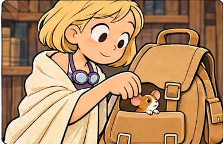
“We have to go home,” said Jack. “We need warmer clothes.”
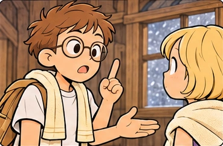
“We can’t go home,” said Annie. “We can’t find the Pennsylvania book. Not until our mission is complete. Remember? That’s the way the magic works.”
“Oh … right,” said Jack. He looked around. There was no sign of the Pennsylvania book that always took them home.
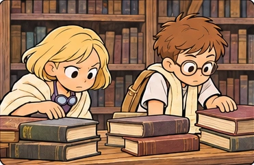
Annie out the window again. “Where are we, anyway?” she asked.
“I’ll find out,” said Jack. He picked up the open book and read the title on the cover. “Life in the Ice Age.”
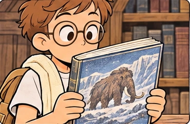
“Ice Age?” said Annie. “No wonder we’re cold.”
“We better find the third M thing soon,” said Jack. “Before we freeze to death.”
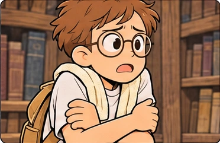
“Look,” whispered Annie, “people.” She pointed out the window.
Jack saw them, too: four figures on a cliff. Two big figures and two little ones—all holding long spears.
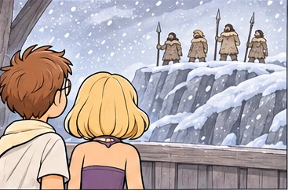
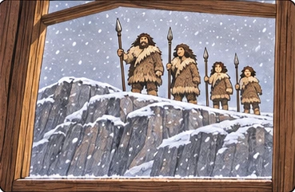
“Who are they?” said Annie.
“I’ll look in the book,” said Jack.
He found a picture of some people. He read the caption to Annie:
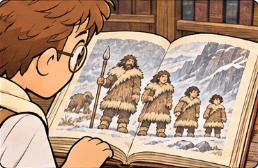
Early modern humans were called Cro-Magnons. During the late Ice Age in Europe, they sometimes lived in caves beneath cliffs.
“Why are they carrying spears?” said Annie.
Jack turned the page. He found another picture of the Cro-Magnons. He read aloud:
The Cro-Magnon family often hunted together. They covered deep pits with branches. Then they drove and mammoths into the traps.
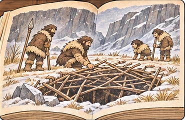
“Oh, trapping the animals—that’s sad,” said Annie.
“No, it’s not,” said Jack. “They couldn’t live without hunting. They didn’t have supermarkets, you know.”
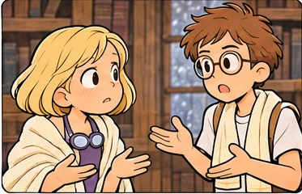
They watched the family disappear over the other side of the cliff.
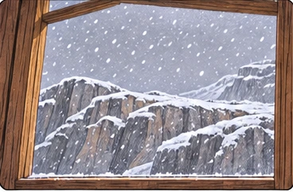
“Come on, I’m freezing,” said Jack. “Let’s hurry and find the M thing while the Cro-Magnons are hunting.”
“But I want to meet them,” said Annie.
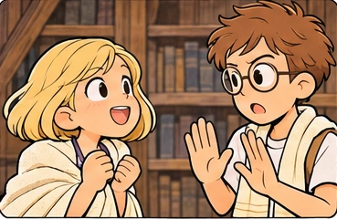
“Forget it,” said Jack.
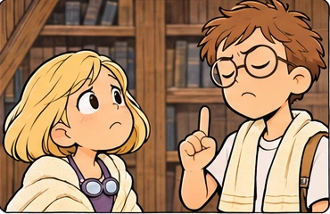